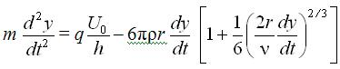
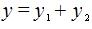
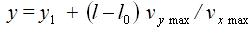

Электрофотографические настольные принтеры применяются в полиграфии в составе издательских систем на базе ПЭВМ для выпуска бланочной и другой продукции методом репродуцированного оригинала-макета, а также для получения корректурных отпечатков полос изданий, а также для работы технического и художественного редакторов и корректорской читки.
При изготовлении корректурных отпечатков достаточно иметь принтер с разрешением 300-600 dpi, а для изготовления репродуцируемого оригинала-макета желательно использовать принтер с разрешением 600-1200 dpi или выше. Необходимо знать, что многие модели принтеров имеют так называемое алгоритмическое или "несимметричное" разрешение.
В этом случае фактическое разрешение, обеспечивающееся перемещением лазерного луча, составляет 1200 dpi (рис. 53), а фактическое разрешение по цилиндру равно 600 dpi. Воспроизводимое растрированное изображение при этом имеет не квадратную, а прямоугольную структуру, а луч лазера способен поставить растровую точку либо в верхней, либо в нижней части прямоугольника. В этом случае говорят об алгоритмическом разрешении 1200 dpi. Как видно из рисунка, высокое алгоритмическое разрешение лишь позволяет сделать края изображения более гладкими, но не черный цвет хорошего качества.
Другая распространенная технология повышения разрешения состоит в уменьшении вращения электрофотографического цилиндра до такой скорости, чтобы обеспечить по вертикали удвоение числа линий сканирования и тем самым получить разрешающую способность, равную 1200 x 1200 dpi.
Лазерный принтер для печати на листовой бумаге (рис. 54) состоит из полупроводникового лазера 10, работающего в импульсном режиме в инфракрасной области спектра и формирующего луч, который разворачивается непрерывно вращающимся многогранным металлическим дефлектором 12.

Фокусирующая и компенсаторные линзы объектива 11 фокусируют пучок света, который, отразившись от зеркала 9, попадает на поверхность электрофотографического цилиндра 7.
Электрофотографический цилиндр с нанесенным на его металлическую, обычно алюминиевую поверхность тонким фотополупроводниковым слоем предварительно заряжается с помощью устройства 8, называемого коротроном и тем самым приобретает светочувствительность.
В силу последнего обстоятельства пучок света лазера 10 формирует на электрофотографическом цилиндре скрытое изображение. Проявление его выполняется однокомпонентным проявителем в устройстве 13. После проявления заряженное изображение переносится электростатическим полем, сформированным электризатором 15, на бумагу. По окончании процесса переноса изображения на обратной стороне бумаги остается заряд, воздействие которого может привести к застреванию бумаги в принтере. Чтобы этого не произошло, в конструкциях принтеров предусмотрены специальные механические пальцы отделения бумаги или коротроны отделения, создающие заряд противоположной полярности к коротрону переноса, но меньшей величины, чтобы часть заряда от коротрона переноса сохранилась и удерживала тонарное изображение на бумаге вплоть до его закрепления термосиловым методом в устройстве 3.
Вышеописанные узлы зарядки 8, проявления 10, а также узел очистки 4 с ракелем, предназначенный для очистки электрофотографического слоя от остатков тонера, конструктивно объединены в сменной кассете 5, называемой картриджем. Такое конструктивное решение значительно упрощает ремонт и обслуживание оборудования.
Вывод отпечатанных листов с принтера осуществляется системой валиков 3 на приемный лоток 2.
В большинстве принтеров подача листов бумаги осуществляется с помощью фрикционного устройства самонаклада из лотка 14.
В качестве устройств цифровой цветопробы используются цветные электрофотографические принтеры. В них, как и в черно-белых, используется лазер или линейка светодиодов.
Конструкция цветных принтеров базируется на технологии получения цветного изображения электрофотографическим методом и конструктивно подразделяется на одноцилиндровые или двухцилиндровые.
Схема одноцилиндрового варианта приведена на рис. 55, а.
Одноцилиндровый вариант - это накопление цветного изображения непосредственно на электрофотографическом цилиндре в результате последовательного цветоделенного экспонирования и четырехкратного (включая черный цвет) проявления цветами триады. Полученное цветное изображение переносится непосредственно на бумагу и закрепляется.

Двухцилиндровый вариант (рис. 55, б) и его модификации с автоматически сменяемыми узлами проявления, как правило, применяются в лазерных принтерах. По этому варианту изображение многократно экспонируется и проявляется на цилиндре и каждый раз переносится на бумагу, удерживаемую на другом цилиндре - цилиндре переноса. Только после завершения процесса накопления цветного изображения бумажный лист освобождается и транспортируется в зону закрепления, где порошковое изображение закрепляется.
Струйная печать - это процесс регистрации информации, осуществляемый каплями чернил, вылетающими из сопла с высокой скоростью, обеспечивающей достижение поверхности, на которой и регистрируется информация.
Струйная печать классифицируется по способу нанесения изображения и подразделяется на непрерывную и импульсную. Импульсная струйная печать, в свою очередь, подразделяется на пьезоэлектрическую, пузырьковую и печать твердыми чернилами.
Струйная печать имеет некоторые недостатки. Так, например, до сих пор существует зависимость качества печати от вида бумаги. Пористая, рыхлая бумага приводит к расплыванию чернил, в результате чего линии и контуры теряют четкость. Недостатком струйной печати также является неоднородность размеров сопел и соответственно изменение размера капель и скорости их полета, что заметно сказывается на качестве. Еще один эффект, который способен снизить качество печати - это появление капель-"спутников", которые неуправляемы и попадают в ненужное место на бумаге. Кроме того, изображения, созданные методом струйной печати, имеют два существенных недостатка: "водобоязнь" и склонность к выцветанию.
Достоинство струйной печати по сравнению с электрофотографическим способом - это низкая стоимость цветного отпечатка, полученного на струйном принтере при практически одинаковом качестве.
Для получения высококачественного изображения выпускаются принтеры с физическим разрешением 1440 x 720, 1200 x 1200, 2880 x 720, 2400 x 1200 dpi. Последние два значения разрешения обеспечиваются за счет двойного прохода печатающей головки принтера.
Непрерывную струйную печать более правильно называть каплеструйной, потому что струя чернил не является сплошной, а состоит из множества микроскопических капель.
В каплеструйном принтере (рис. 56) печатающая головка образует непрерывную капельную струю чернил, выбрасываемую под давлением за счет наложения на нее колебаний, получаемых с помощью, например, пьезоэлектрического генератора капель. Под действием переменного электрического напряжения кристалл пьезоэлектрика изменяет свой объем и выталкивает каплю из головки. Чернила под давлением постоянно подаются в печатающую головку из резервуара с помощью насоса. Для получения чернил определенной вязкости этот резервуар соединен с резервуаром растворителя.
С помощью ускоряющего электрода, охватывающего выход из сопла, вылетающие капли приобретают электрический заряд. Таким способом может выбрасываться до миллиона капель в секунду. Их размеры зависят от геометрии сопел-распылителей и могут составлять всего лишь несколько микрон, а скорость, с которой они долетают до бумаги, достигает 40 м/с.
Уравнение движения заряженной капли по направлению к бумажному листу (рис. 57) в промежутке от сопла до ускоряющего электрода определяется уравнением
 |
(6) |
где m - масса капли;
F1 - кулоновская сила притяжения капли к ускоряющему электроду;
F2 - сила сопротивления воздуха.

Подставляя в выражение (6) значения действующих сил, получим
 |
(7) |
где - плотность и кинетический момент вязкости среды;
r - радиус капли;
k 1- некоторый коэффициент;
q - заряд капли;
U - разность потенциалов между соплом и электродом;
l - расстояние от среза сопла до ускоряющего электрода.
Решение уравнения (7) позволяет найти изменение скорости капли в зависимости от приложенного напряжения.
Далее капли пролетают через отклоняющую систему, которая создает электрическое поле высокого напряжения. Так как они имеют заряд, то под действием электрического поля изменяют свою траекторию.
Отклонение капли в направлении, перпендикулярном оси ОХ, возникает за счет подачи напряжения на отклоняющие электроды, а уравнение движения капли при этом имеет следующий вид
|  |
(8) |
где U - отклоняющее напряжение;
h - расстояние между электродами.
На участке от отклоняющих электродов до бумаги уравнение движения капли будет иметь вид:
 |
(9) |
так как отклоняющее напряжение на этом участке не воздействует на каплю.
Суммарное отклонение капли на двух участках будет равно
|  |
(10) |
где y1 - отклонение капли от ускоряющего электрода до конца отклоняющих электродов;
y2 - отклонение капли на участке от конца отклоняющего электрода до бумаги.
Если пренебречь сопротивлением воздуха, то уравнение (8) можно записать в виде:
 |
(11) |
Решая уравнение (11), получим
|
(12) |
где l0 - длина отклоняющих электродов; vx max - максимальная линейная скорость капли в направлении оси ОХ, равная
 |
(13) |
Вторая составляющая отклонения капли определяется формулой
| (14) |
где
 |
(15) |
Таким образом, максимальное отклонение капли будет равно
|  |
(16) |
Генератор изображения управляет направлением полета капель. Они попадают либо на бумагу в нужном месте, либо в уловитель и оттуда в резервуар чернил для повторного использования.
Основное достоинство струйных принтеров с непрерывной печатью - это возможность получать цветное изображение высокого качества. На нем совершенно неразличимы глазом точки, из которых оно сформировано.
В отличие от струйнокапельной печати струйные принтеры импульсной печати "выстреливают" чернила только когда получают сигнал, т. е. это печать "по требованию".
В печатающих головках импульсного типа капельный генератор выполнен в виде небольшой камеры, расположенной рядом с соплом. В камере в нужный момент создается избыточное давление, выталкивающее из камеры каплю чернил, которая и попадает на бумагу. Так, капля за каплей, точка за точкой формируется изображение.
В капельных генераторах импульсных принтеров избыточное давление создается либо при помощи кристалла пьезоэлектрика, действующего как микропоршень на стенку камеры, либо за счет сильного теплового импульса, под действием которого образуется пузырек мгновенно испарившихся в камере чернил. Такие камеры некоторыми авторами называются пузырьково-струйными распылителями.
Конструктивно пьезоэлектрические капельные генераторы выполнены в виде пьезотрубок "Siemens" или структурированных стеклянных пластинок с закрепленными на них небольшими пьезопластинками "Epson", а также в виде ламеля-пластинчатого пьезопреобразователя "Dataproducts", "Epson".
Пластинчатые пьезопреобразователи сочетают в себе преимущества как плоских, так и трубчатых систем высокую частоту распыления и компактную конструкцию.
Несмотря на конструктивное разнообразие, все печатающие головки с пьезопреобразователями работают по одному принципу, избыточное давление в камере с чернилами создается с помощью пьезоэлемента, который изменяет свои размеры - выгибается при подведении к нему электрического напряжения (рис. 58), что уменьшает объем камеры. Из-за сравнительно высокой технологической сложности в изготовлении пьезоэлектрические печатающие головки дороже, чем пузырьково-струйные.

В печатающих головках пузырьково-струйная технология воспроизводится следующим образом (рис. 59). В стенку сопла встроен нагревательный элемент. При подаче на него сильного электрического импульса длительностью 3-7 мкс его температура резко возрастает до 5000 С.
В результате этого чернила начинают кипеть и образуют пузырек пара с избыточным давлением до 10 бар. Это давление выталкивает чернила из сопла-распылителя, причем скорость полета капли достигает 10 м/с и более. После выталкивания капли пузырек схлопывается, чернила снова засасываются из резервуара в капиллярную трубку сопла.
С самого начала пузырьково-струйные печатающие головки делятся на две группы.
Компания "Canon", предпочитает систему с подачей чернильных капель перпендикулярно к направлению образования пузырьков.
В печатающих головках фирмы "Olivetti" используется способ прямого распыления, т. е. пузырьки и капли движутся в одном направлении.
Важной особенностью пузырьково-струйных печатающих головок, использующих способ прямого распыления, является простота их изготовления, однако повышенное разряжение, возникающее в капилляре, после опадения пузырька вызывает сильный гидравлический удар чернил о поверхность нагревательного элемента, что является недостатком и в конечном итоге может вызвать его повреждение.
К струйным принтерам импульсного типа относятся также принтеры с твердыми чернилами, которые в процессе печатания изменяют фазу своего состояния. В этих принтерах (рис. 60) четыре цветные восковые палочки, соответствующие базовым цветам, - голубая, пурпурная, желтая и черная - закладываются в печатную головку. Нагреватели расплавляют воск, при температуре 90?С он переходит в жидкое состояние и стекает в резервуар с подогревом, где чернила поддерживаются в жидкой фазе во время работы принтера. Для получения изображения печатающее устройство откачивает небольшое количество чернил из резервуара и затем дополнительно нагревает его.
Электронное устройство "выстреливает" мельчайшие капли чернил в тот момент, когда это требуется. При контакте с бумагой чернила мгновенно переходят в твердую фазу, поэтому они не впитываются в бумагу, а остаются на ее поверхности. При этом полностью отсутствует эффект расплывания чернил, присущий любым жидким чернилам. Но поскольку капли застывают мгновенно, поверхность изображения становится шершавой. Поэтому лист бумаги с изображением прокатывают через валики, которые расплющивают застывшие капли твердых чернил и придают изображению приятный глянцевый вид.

Главное преимущество струйной печати со сменой фаз перед другими струйными технологиями заключается в ее высоком качестве по причине отсутствия впитывания чернил в бумагу.
Единственный недостаток - высокая стоимость печати.
Цветопроба занимает особое место в цепочке производственного процесса и, по сути, является процессом моделирования тиражного оттиска с целью колометрического контроля качества полученного оттиска будущего тиража, а также может быть использована в качестве подтверждения правильности выполненного заказа при возникновении конфликтных ситуаций с заказчиком.
Цветопробы бывают экранными и на твердом носителе.
За экранную цветопробу можно принять изображение на откалиброванном мониторе.
При такой цветопробе можно говорить лишь о первоначальной визуальной оценке изображения, которая не является документом, подтверждающим правильность последующего репродуцирования.
Цветопробы на твердом носителе можно разделить на три вида: цифровую, аналоговую и пробную печать.
Место цветопробы в технологической цепочке полиграфического предприятия не однозначно. Тем не менее, можно выделить три наиболее характерных варианта включения цветопробы в производственный процесс (рис. 61).
Первый вариант листа цветопробы осуществляется после окончательно сверстанных полос до изготовления цветодельных растровых фотоформ (рис. 61, а).
Второй вариант - цветопроба непосредственно с фотоформ (рис. 61, б).
Третий - цветопроба (пробная печать) после изготовления печатных форм (рис. 61, в).

На любом из перечисленных этапов цветопроба должна максимально соответствовать будущему печатному оттиску.
В настоящее время наиболее часто применяемыми являются технологии получения цифровой и аналоговой цветопроб.
Цветные отпечатки, получаемые с целью оценки качества обработки и цветоделения изобразительной информации, называются цифровыми цветопробами.
Особенность этой пробы состоит в том, что она выполняется с помощью печатающих устройств непосредственно с компьютера.
В настоящее время в качестве устройств для получения цифровых цветопроб используются принтеры, работающие с различными технологиями перенесения красочного пигмента на основу. Различают принтеры, работающие по принципу термопереноса, сублимационные, струйные, лазерные и принтеры на твердых чернилах. Кратко рассмотрим принципы их работы.
В основу работы принтера с термопереносом положен перенос цветных красителей со специальной лавсановой пленки на бумагу под действием высокой температуры. Красители содержат в своем составе воскоподобное вещество, которое плавится при нагревании и позволяет красителю перейти с лавсановой подложки на бумагу (рис. 62).
В процессе печати на лавсановой подложке создается высокая температура в тех местах, где должно находиться изображение соответствующего цвета. Каждый цветной оттиск печатается в четыре прогона. Краски, используемые в таком методе, по цвету довольно близки к триадным, а отсутствие их смешения позволяет получить хорошую цветопередачу. Разрешающая способность подобных принтеров обычно 300 dpi, при печати применяется специальная бумага. Скорость печати - 1-2 с/мин.
Недостатки этого способа - низкая разрешающая способность, специальная бумага и неэкономичное использование пленочного красителя.
Сублимационные принтеры используют практически такой же принцип переноса красящего вещества на подложку, как и предыдущая технология, только в отличие от последней не создаются растровые точки. Запечатывание происходит равномерно и полностью, а изображение имеет фотографический вид (оно лишено растровой структуры).
В этих принтерах используют специальные красители, которые обладают повышенной прозрачностью. Формирование того или иного оттенка цвета зависит от толщины слоя базового красителя, перенесенного на бумагу. Процесс переноса красителя (рис. 63) основывается на нагревании его до состояния, близкого к парообразному. Испарившийся краситель соприкасается со слоем специального химического покрытия, которое нанесено на бумагу, и проникает в него. Степень переноса красителя зависит от степени нагрева в конкретной точке. После завершения процесса для четырех базовых цветов на бумаге формируется изображение.

Основные недостатки сублимационной печати - высокая стоимость отпечатка, невозможность печати на простой бумаге и воспроизведения растровой структуры.
Струйные принтеры - наиболее распространенные устройства для получения цифровых цветопроб. Это связано не только с относительно малой стоимостью печати, но и дешевизной самого устройства, возможностью работы с различными материалами.
Струйные принтеры охватывают наибольший диапазон рынка компьютерных периферийных устройств. Общий принцип печати таких устройств основан на переносе жидких цветных чернил на лист бумаги (подробно описан в подразделе 2.1.3).
Недостатками этих принтеров являются разбрызгивание краски при ударе о бумагу, приводящее к снижению четкости изображения, опасность засорения форсунок, а также печать водорастворимыми красками, требующими дополнительного ламинирования.
Принцип работы цветных лазерных принтеров такой же, как и черно-белых, только процесс нанесения изображения на барабан и перенос его на бумагу повторяется четыре раза в соответствии с количеством красок тонера (см. подраздел 2.1.1). Максимальное разрешение, достигаемое принтерами, составляет 1200 dpi. К недостаткам этих принтеров можно отнести относительно невысокую точность позиционирования листа и возникающие в связи с этим неточности в воспроизведении изображения.
Использование принтеров на твердых чернилах получает в настоящее время все большее распространение. В основу этих устройств положено термическое плавление твердого красителя, разгон капли красителя и быстрое ее застывание при соприкосновении с бумагой. При подобном нанесении красителя удается избежать двух проблем струйных принтеров: смешения чернил и растекания при впитывании. Таким образом, красители на бумаге оказываются в чистом виде, что обеспечивает большой цветовой охват. Разрешение таких устройств находится в пределах 300 dpi.
В допечатном процессе для контроля качества обработки, в том числе и цветоделения изображений, кроме цифровых цветопроб применяют также и технологию получения аналоговых цветопроб с использованием вещественных носителей изображений - фотоформ или печатных форм.
Аналоговую цветопробу без изготовления печатных форм целесообразно применять в допечатных системах, реализующих технологию Computer-to-Film после изготовления комплектов цветоделенных растрированных фотоформ. Для получения цветных изображений с таких фотоформ используются специальные цветопробные материалы.
Аналоговые цветопробы подразделяются на так называемые "сухие" и "мокрые".
Отличие первых от вторых в том, что в процессе оттиска на "сухих" цветопробах не используются какие-либо химические растворы: пигмент с пробельных элементов удаляется механически. В случае "мокрых" цветопроб происходит проявление, т. е. разрушение и вымывание элементов, которые приобрели растворимость. Процессы "сухой" и "мокрой" цветопробы отличаются разнообразием, а их отличие между собой обусловлено свойствами применяемых цветопробных материалов. При рассмотрении различных технологий можно выделить три главных этапа получения цветопробного отпечатка:
Комплекты оборудования для "аналоговой" цветопробы независимо от поставщика, как правило, содержат:
Ламинаторы - устройства, предназначенные для прикрепления к различным основам и бумаге пленок, покрытых термоклеевым слоем. Приклеивание осуществляется за счет одновременного нагрева, расплавляющего термоклеевой слой, и плотного прижима пленки к основе транспортирующими валиками с нагревателями (рис. 63).
Таких пар валиков может быть несколько. Ламинатор должен обеспечивать необходимый для конкретной цветопробной системы технологический режим, т. е. установку требуемых значений температуры и скорости.
В некоторых случаях для дополнительной засветки сформированного изображения УФ-излучением ламинатор снабжается соответствующим осветителем.
Экспонирующие установки (контактно-копировальные устройства) предназначены для воздействия УФ-излучением на пигментные слои цветопробных материалов. Для этого могут использоваться обычные контактно-копировальные устройства для экспонирования формных материалов (например, офсетнх пластин). Как правило, системы цветопробы комплектуются подобными устройствами, имеющими более простую конструкцию.
Проявляющие процессоры удаляют засвеченный пигментный слой с пробельных элементов изображения путем действия химических растворов. Эти процессы аналогичны процессорам для обработки офсетных форм. На рис. 64 отображена принципиальная схема процессора для проявления цветопробных изображений. Он состоит из стола подачи материала 2 в зону обработки, в который вмонтирован контактный выключатель 3 для запуска транспортирующей системы. Транспортирующая система состоит из четырех пар валиков 4 и направляющей 8. Проявитель подается через распределительную трубку 5 на накатной валик 6, служащий для нанесения проявителя на цветопробный материал. Проявление сопровождается механической обработкой поверхности материала щеточным ракелем 7. Для удаления пигмента с пробельных элементов используются щетки-ракели 9. Проявленное цветопробное изображение промывается водой, подаваемой через распределительные трубки 10. Под действием сушильного устройства 11 влага удаляется, и цветопробное изображение выводится последней парой транспортирующих валиков в приемный лоток 12. В этот проявляющий процессор встроен ламинатор 1.
Изготовление цветопробы "сухим" способом производится в несколько этапов.
Сначала на лист плотной бумаги - основы со специальным покрытием - при помощи ламинатора наносится слой светочувствительного материала с защитной пленкой сверху. Затем поверх защитной пленки крепится фотоформа.
Ламинированная бумага с фотоформой помещается в копировальную раму и подвергается кратковременному (от 5 до 30 с) экспонированию с помощью ультрафиолетового источника света. Происходящий при этом фотохимический процесс является основой формирования изображения. Светочувствительный слой, который был клейким по всей поверхности до экспонирования, полимеризуется и теряет клейкость в тех местах, где на него попал свет, т. е. на пробельных элементах. Там же, где свет был перекрыт печатающими элементами - растровыми точками, полимеризации не происходит.
Использование материала, чувствительного только к ультрафиолетовой части спектра, позволяет выполнять все операции на свету.
После экспонирования фотоформа снимается, защитная пленка удаляется. Бумага с воспринявшим изображение светочувствительным слоем пропускается через валики, где по ней прокатывается покрытая слоем пигмента фольга. Процесс, происходящий при этом, достаточно прост: слабо держащийся на поверхности фольги пигмент прилипает к оставшимся клейким печатающим элементам. В результате на участках бумаги, соответствующих черным местам фотоформы, создается изображение.
Для получения цветного изображения описанный выше процесс повторяется четыре раза с использованием фотоформ для голубой, пурпурной, желтой и черной красок. Каждый раз берется фольга с соответствующим пигментом. Совмещение красок производится вручную.
После нанесения последней краски готовый оттиск покрывается защитным ламинатом для придания устойчивости к внешним воздействиям.
Технология изготовления цветопробы обеспечивает имитацию фиксированной величины растискивания растровой точки 17-20%. Основу красителей составляют пигменты офсетных красок, что обеспечивает точное соответствие тиражным оттискам.
Безусловными преимуществами аналоговой пробы является не только хорошее соответствие офсетным оттискам, но и возможность полного контроля не только цвета, но и качества растрирования векторных элементов, совмещения красок и даже (отчасти) оптической плотности экспонирования пленки.
Подобный принцип формирования пробы используется и при "мокром" способе получения цветопробы. В этом случае прикатываемый к основе ламинат уже содержит красящее вещество внутри светочувствительного слоя. После экспонирования подвергшиеся воздействию света участки красящего слоя меняют свою чувствительность к определенным реактивам и при обработке в проявочном процессоре удаляются химическим способом вместе с защитным слоем ламината. Участки пигментированного слоя, защищенные от экспонирования участками фотопленки, фиксируются в проявочном процессоре и образуют видимое изображение.
Основной недостаток систем аналоговой пробы - высокая себестоимость оттиска. Трудоемкость изготовления аналоговой пробы достаточно высока, и, что немаловажно, большое влияние на качество пробы оказывает квалификация оператора, а также невозможность работы на тиражной бумаге.
Качество печатных форм иногда проверяют до печатания тиража. Это особенно важно при многокрасочной печати. Пробное печатание проводят на специальных пробопечатных станках, условия печати в которых максимально приближены к условиям печати в машинах. Чем ближе условия печати на пробопечатном станке к условиям печати в машине, тем достовернее пробный оттиск характеризует ожидаемые результаты.
Современные офсетные пробопечатные станки, снабженные увлажняющими красочными аппаратами, могут использоваться не только для пробного печатания, но и для печатания небольших тиражей.
Процесс получения пробного оттиска на таком станке состоит из увлажнения формы, нанесения краски на форму, переноса изображения с печатной формы на офсетный цилиндр, а затем с офсетного цилиндра на лист бумаги.
Офсетный пробопечатный станок (рис. 65) состоит из металлического горизонтального стола 13 для крепления печатной формы; металлического горизонтального стола 12 для укладки листа бумаги; офсетного цилиндра 6, на каретке которого смонтированы увлажняющий (накатные 5 и раскатные 4 валики) и красочный (накатные 11 и раскатные 7, 8 валики) аппараты; стационарных увлажняющих валиков 2 и 3, погруженных в увлажняющий раствор 1, и стационарных красочных валиков 9, 10.

Каретка офсетного цилиндра совершает возвратно-поступатель-ные движения, а сам офсетный цилиндр вращается вокруг своей оси. При изготовлении пробного оттиска каретка офсетного цилиндра совершает холостой и рабочий ход. Во время рабочего хода она движется в сторону от стола с формой к столу с запечатываемой бумагой. При движении каретки над столом с формой накатные красочные и увлажняющие валики автоматически опускаются на печатную форму и наносят на нее краску и увлажняющий раствор, а при движении над столом с бумагой поднимаются. Офсетный цилиндр при этом прокатывается под давлением по печатной форме, в результате чего на резинотканевой пластине получается отпечаток. Затем офсетный цилиндр прокатывается под давлением по листу бумаги и изображение с него переходит на бумагу.
Давление выключается в тот момент, когда каретка офсетного цилиндра заканчивает рабочий ход и устанавливается в крайнее положение для выстоя. В это время оттиск вручную удаляют со стола и укрепляют следующий лист бумаги.
При холостом ходе офсетный цилиндр находится в приподнятом положении, давление выключено, а каретка перемещается от стола для бумаги в сторону стола с печатной формой, т. е. возвращается в исходное положение. Для получения следующего отпечатка рабочий цикл повторяется. Таким образом, движение офсетного цилиндра в направлении от стола с формой к столу для бумаги является его рабочим ходом, а от стола с бумагой к формному - холостым.
Существуют пробопечатные станки и для высокой печати. В отличие от офсетных пробопечатных станков в них отсутствует увлажняющий аппарат, а передача изображения на бумагу осуществляется непосредственно с формы.
Пробная печать обеспечивает полную гарантию соответствия цветопробного оттиска будущему тиражному. Это достигается за счет использования тиражных форм и тиражных расходных материалов (краски, бумаги). Однако по сравнению с цифровой и аналоговой цветопробами пробная печать более дорогой процесс, кроме того, в этом случае значительно возрастает цена технологических ошибок и сбоев, допущенных на стадии допечатных технологических процессов.